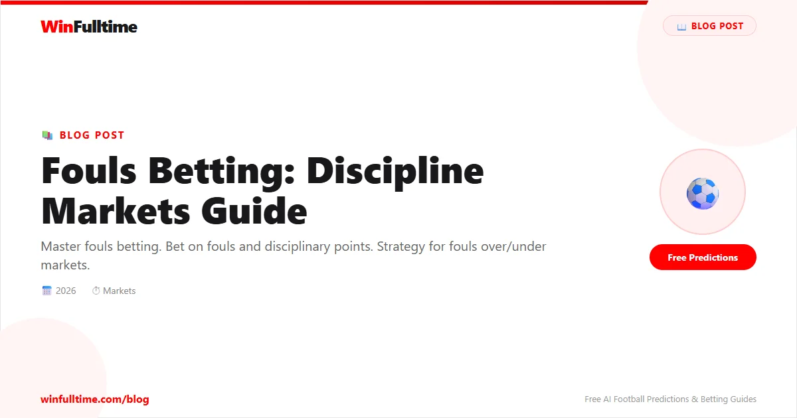

Fouls betting is one of football's most underutilised niche markets. While most bettors focus on goals, corners, or cards, the fouls market offers consistent opportunities for those who understand the dynamics that drive disciplinary counts. From booking points systems to referee tendencies, this guide covers everything you need to build a profitable foul betting strategy.
Unlike goal-based markets where elite talent can override team dynamics, fouls are driven by structural factors — playing style, match context, referee personality, and league culture. These factors are predictable and measurable, making foul betting a fertile ground for disciplined analysts.
Foul betting markets have grown significantly in recent years. Most major bookmakers now offer dedicated foul markets alongside traditional disciplinary markets. Understanding the available options is the first step to building a strategy.
| Market Type | Description | Typical Odds |
|---|---|---|
| Total Match Fouls Over/Under | Bet on whether total fouls exceed a set line (e.g. 22.5, 24.5, 26.5) | 1.80-2.00 |
| Team Fouls Over/Under | Individual team foul counts (e.g. Team A over 10.5 fouls) | 1.80-2.00 |
| First Foul Market | Which team commits the first foul of the match | 1.80-2.20 |
| Foul Minute Markets | Time of first foul (e.g. before/after 10 minutes) | 1.85-2.10 |
| Booking Points | Points-based system (10 per yellow, 25 per red) | 1.80-2.00 |
| Most Fouls Conceded | Which player will concede the most fouls | 3.00-8.00 |
| Fouls Handicap | One team given a foul handicap (e.g. Team A -2.5 fouls) | 1.85-2.00 |
Foul markets are most liquid in major European leagues — Premier League, Bundesliga, Serie A, La Liga, and Ligue 1. Champions League and Europa League matches also attract solid liquidity. Lower-league and smaller-market matches may have limited foul market options or wider spreads.
Bet365 and Pinnacle offer the widest selection of foul markets across major leagues. OddsPortal lets you compare foul market odds across bookmakers. Pinnacle is particularly useful for serious foul bettors because their limits are higher and their odds are sharper, reflecting market consensus more accurately.
Booking points (also called disciplinary points) are the most sophisticated way to bet on foul-related markets. Different bookmakers use slightly different systems, so understanding the exact rules is essential.
| Action | Standard Points | Bet365 System | Sky Bet System |
|---|---|---|---|
| Yellow Card | 10 points | 10 points | 10 points |
| Second Yellow (2YC) | 25 points (some bookmakers 10+15) | 25 points (10 for first, 15 for second) | 25 points total |
| Straight Red Card | 25 points | 25 points | 25 points |
| Maximum per player | 35 points (yellow + straight red) | 35 points | 35 points |
Key distinction: Some bookmakers count 10 points for the first yellow, then 15 additional points for a second yellow (25 total for 2YC). Others count 10 for the first yellow and 25 for the straight red, with second yellows treated differently. Always check the specific bookmaker's terms before placing booking points bets.
Match: Atletico Madrid vs Real Madrid
Incidents: 4 yellow cards for Atletico (40 pts), 3 yellows for Real Madrid (30 pts), 1 straight red for Atletico (+25 pts)
Total: 95 booking points
If you bet over 70.5 booking points at 1.85, you win. The line is typically set between 60-80 points for most matches, depending on the teams and referee.
Booking points markets are more predictive than simple foul counts because they weight more severe disciplinary events. A match with 20 fouls but only 2 yellow cards will have fewer booking points than a match with 16 fouls but 6 yellows and a red. Understanding which matches produce cards versus just fouls is key to winning at booking points.
Every team has a distinctive foul profile. Some teams foul aggressively and often; others are disciplined and tactical. Understanding these profiles is the foundation of foul betting.
Core metrics for team foul analysis:
| Team Profile | Fouls/Game | Cards/Game | Stylistic Description | Foul Betting Signal |
|---|---|---|---|---|
| High-pressing aggressive | 13-16 | 2.5-3.5 | Intense pressing, tactical fouling, counter-attacking style | Over fouls strong |
| Possession-dominant | 8-11 | 1.5-2.0 | Patient build-up, low tackle rate, control-oriented | Under fouls strong |
| Physical/direct | 12-14 | 2.0-3.0 | Long balls, aerial duels, physical contests | Over fouls moderate |
| Counter-attacking | 11-13 | 2.0-2.5 | Defensive shape, fast breaks, tactical fouls | Varies by opponent |
| Relegation battlers | 13-16 | 2.5-3.5 | Desperate defending, behind the play, reactive fouling | Over fouls strong |
FBref provides comprehensive team foul data including fouls committed, suffered, and disciplinary records, all split by competition. WhoScored offers match-by-match foul breakdowns with team averages. Soccerway has historical foul data going back multiple seasons — invaluable for identifying long-term trends.
Home/Away splits in foul data: Teams typically commit 1-2 more fouls per game away from home. This is a well-documented phenomenon — home teams receive more favourable refereeing decisions, which may suppress their foul count. Away teams often resort to tactical fouling to disrupt home momentum. Always check home/away foul splits when analysing a match.
No single factor influences foul counts more than the referee. Different referees have vastly different thresholds for what constitutes a foul, and these differences are predictable and measurable.
Referee archetypes for foul betting:
| Referee | League | Avg Fouls/Match | Avg Cards/Match | Style |
|---|---|---|---|---|
| Michael Oliver | Premier League | 26.4 | 4.1 | Whistle-happy |
| Anthony Taylor | Premier League | 25.8 | 4.3 | Whistle-happy |
| Paul Tierney | Premier League | 21.2 | 3.2 | Let-it-play |
| Danny Makkelie | Eredivisie | 27.1 | 4.5 | Whistle-happy |
| Cüneyt Çakir | International | 24.8 | 5.2 | Card-happy |
| Felix Zwayer | Bundesliga | 23.5 | 3.8 | Balanced |
| Jesús Gil Manzano | La Liga | 25.6 | 4.6 | Whistle-happy |
| Maurizio Mariani | Serie A | 22.8 | 4.0 | Balanced |
Cross-reference the assigned referee's average foul rate with both teams' average fouls committed. If a whistle-happy referee is assigned to a match between two high-foul teams, the over line should be significantly higher than the default — but bookmakers don't always adjust enough. This creates a consistent edge.
Use Transfermarkt to find the assigned referee for upcoming matches (usually confirmed 2-3 days before kickoff). worldfootball.net maintains extensive referee statistics including fouls per game across multiple seasons.
The referee-team dynamic: Some teams have well-known relationships with specific referees. Aggressive teams that underperform their foul average under a lenient referee may revert to mean when a strict referee takes charge. Check head-to-head data between the referee and each team over the last 3-5 matches for hidden patterns.
Foul rates vary dramatically across leagues due to playing style, cultural attitudes toward physicality, and refereeing standards. Knowing the league context prevents you from applying Premier League norms to Serie A or Bundesliga matches.
| League | Avg Fouls/Match | Avg Cards/Match | Style | Foul Betting Note |
|---|---|---|---|---|
| Premier League | 23.5 | 3.8 | High intensity, physical | Referee-dependent; big variance |
| Bundesliga | 25.2 | 4.2 | High press, open transitions | Consistently high foul count |
| La Liga | 26.8 | 5.0 | Tactical fouling, simulation | Highest foul rate in Big 5 |
| Serie A | 24.0 | 4.4 | Tactical, defensive discipline | Foul count varies by matchup |
| Ligue 1 | 22.8 | 3.6 | Athletic, transitional | Lower foul count than stereotypes suggest |
| Eredivisie | 24.0 | 3.5 | Open, attacking | Fouls concentrated in defensive teams |
| Championship | 24.5 | 4.0 | Physical, competitive | Reliable over fouls market |
| Serie B | 25.8 | 4.8 | Physical, tactical | Underrated for over fouls |
| MLS | 21.5 | 3.2 | Open, less tactical fouling | Lower foul counts, less reliable |
| Primeira Liga | 26.2 | 4.6 | Physical, tactical | High foul rates, good for overs |
Derby matches are a special category for foul betting. The heightened emotional stakes, historical rivalries, and intense physicality consistently produce elevated foul counts. This is one of the most reliable patterns in football disciplinary betting.
Why derbies produce more fouls:
| Derby Match | League | Avg Fouls (Derby) | Avg Fouls (Normal) | Increase % |
|---|---|---|---|---|
| El Clasico (Real vs Barca) | La Liga | 31.5 | 26.8 | +17.5% |
| Merseyside Derby (Liv vs Eve) | Premier League | 29.2 | 23.5 | +24.3% |
| Der Klassiker (Bayern vs Dortmund) | Bundesliga | 28.8 | 25.2 | +14.3% |
| Derby d'Italia (Juve vs Inter) | Serie A | 30.1 | 24.0 | +25.4% |
| North London (Arsenal vs Spurs) | Premier League | 27.5 | 23.5 | +17.0% |
| Old Firm (Celtic vs Rangers) | Scottish Premiership | 32.0 | 23.0 | +39.1% |
| Manchester Derby | Premier League | 26.0 | 23.5 | +10.6% |
| Milan Derby | Serie A | 29.8 | 24.0 | +24.2% |
Back over fouls in derby matches whenever the bookmaker's line is within 1-2 fouls of the league average. Derby matches consistently outperform league averages, and bookmakers often underestimate this effect — especially for mid-tier derbies that receive less analytical attention. The Old Firm derby, Merseyside derby, and Milan derby show the most consistent foul increases.
A note on derby fatigue: If two teams play each other multiple times in a season (league, cup, possibly playoffs), foul counts tend to decrease slightly in later meetings. Players become familiar with each other's tendencies and may exercise more caution to avoid suspension. This effect is small (2-5%) but worth noting for back-to-back derbies.
In-play foul betting offers significant advantages over pre-match because you can observe the actual match dynamic before committing your stake. The referee's approach becomes clear within 15-20 minutes, and team tactics emerge as the game develops.
Live foul betting scenarios with positive expected value:
If the referee has awarded 6+ fouls in the first 15 minutes, the match is on pace for 30+ fouls. Pre-match over lines (typically 22.5-24.5) will still be available in-play but at higher odds now that 6 fouls have already been counted. The true probability of the over landing has increased, but the in-play odds may not have adjusted fully. This is the single most reliable in-play foul betting edge.
A team that concedes early in a high-stakes match will foul more aggressively to regain possession. Watch for a trailing team's foul rate to spike 20-30% above their baseline. If you backed the over pre-match, hold. If you didn't, the in-play over odds will have drifted — this is a strong entry point.
A red card to a defensive player changes everything. The team with 10 men will foul more to compensate for the numerical disadvantage. The team with 11 men may commit tactical fouls to exploit space. Foul counts in the last 30 minutes of 10v11 matches are typically 15-25% higher than the first 60 minutes. Back over fouls in-play after a red card.
Fouls and cards are closely related but not identical. Understanding the relationship between them opens multi-market opportunities and helps you identify mispriced lines.
The foul-to-card conversion rate: On average, roughly 15-20% of fouls result in yellow cards. But this rate varies significantly by:
When you identify a match likely to have high foul counts, check the cards market too. If the referee has a high card-per-foul ratio, a high-foul match will produce a high-card match. You can combine: Over 24.5 fouls + Over 4.5 cards in a same-game multi for odds around 2.50-3.00.
The key insight: bookmakers price fouls and cards markets semi-independently. The correlation between them is real but not always fully reflected in the combined price. When you've identified a high-foul match with a card-happy referee, the multi can offer genuine value.
Booking points as a bridge market: Booking points straddle fouls and cards. If you're confident in high fouls but uncertain about card volume, booking points can be a better vehicle than pure cards over/under. The points market captures the full disciplinary picture — a match with 25 fouls and 4 yellows (40 points) plus 1 red (25 points) totals 65 booking points, which comfortably clears most 55-60 point lines.
Occasionally, bookmakers misprice the fouls and booking points markets relative to each other. If the foul over/under implies 24 fouls but the booking points line implies only 50 points, there may be an arbitrage opportunity if the referee has a high card rate. The booking points line would need to be re-evaluated upward. Use OddsPortal to spot these cross-market discrepancies.
A systematic foul prediction model removes emotion and gives you a repeatable framework. Here is a tiered approach to building your own model.
The simplest foul prediction: average both teams' fouls committed per game and add the referee's average fouls awarded, then divide by 2.
Example: Team A commits 13.5 fouls/game. Team B commits 12.0 fouls/game. Ref averages 25.0 fouls/game. Predicted total = (13.5 + 12.0 + 25.0) / 3 = 16.8 (per team) = 33.6 total. If the bookmaker line is 24.5, the over is a strong candidate.
Add weighting for match context factors:
For serious bettors comfortable with statistical analysis:
Match: Leeds United vs Crystal Palace (Championship, June 2026)
Referee: Michael Oliver (26.4 avg fouls)
Leeds fouls: 14.2/game (last 10)
Palace fouls: 12.8/game (last 10)
Context: Local derby, both teams in playoff hunt
Model prediction: (14.2 + 12.8 + 26.4) / 3 = 17.8 avg per team � 2 = 35.6 total � 1.20 (derby multiplier) = 42.7 fouls
Bookmaker line: Over 26.5 fouls at 1.85
Verdict: Strong over bet. The model predicts 42.7 fouls, and the line is set at 26.5 — a massive gap. Even with conservative adjustments, this is a high-confidence over play.
The single biggest mistake in foul betting. Bettors analyse teams extensively but ignore who's officiating. A match between two aggressive teams can still go under if a let-it-play referee is in charge. A match between two disciplined teams can go over with a whistle-happy referee. Referee assignment changes the expected foul count by 20-30%.
In goal markets, attacking = goals. In foul markets, attacking doesn't necessarily mean more fouls. Possession-based attacking teams (Manchester City, Barcelona) commit few fouls because they have the ball. Counter-attacking teams commit more fouls because they're defending more. Don't assume a team that scores goals also commits fouls.
Teams playing their third match in 8 days commit fewer fouls. Fatigue reduces pressing intensity, tackle aggression, and overall physical output. Foul rates drop by 10-15% in congested fixture periods. Always check recent match workload before betting over fouls.
Not every match offers value in the foul market. Most weeks, 3-5 matches across all leagues have a clear, exploitable foul betting angle. Forcing bets on matches where the referee is unknown, the teams are average in every dimension, and context is neutral is a losing strategy. Be selective.
The absence of a key defensive midfielder or aggressive tackler can significantly reduce a team's foul count. Similarly, the return of a physical striker who draws fouls can increase the opponent's foul count. Check team news for availability of high-foul players on both sides.
Fouls betting counts every foul committed (typically defined as any infringement that results in a free kick). Booking points is a weighted system: 10 points per yellow card, 25 per red card. Fouls capture the volume of infringements; booking points capture their severity. Both markets are available but they measure different things — a match can be high-fouls but low-booking-points if few cards are issued.
No. Bet365, Pinnacle, and William Hill offer the most consistent foul market coverage across major leagues. Betfair Exchange has foul markets with higher limits. Many smaller bookmakers don't offer dedicated foul markets at all. Check market availability before planning your foul betting strategy.
La Liga consistently leads the Big 5 European leagues with 26-28 fouls per match. The Premier League averages 23-24. The Championship (24-25) and Primeira Liga (26-27) also have high foul rates. The Eredivisie (24) and MLS (21-22) are on the lower end despite their reputation for open play.
The referee is arguably the most important single factor. A strict referee can add 5-8 fouls to a match compared to a lenient referee — that's a 20-30% swing. Always check the referee assignment and their historical foul averages before placing any foul bet. This single step will improve your win rate more than any other adjustment.
Yes, and in-play foul betting can be even more profitable than pre-match. Observing the referee's threshold in the first 15 minutes gives you a massive edge. If the referee is awarding fouls at a rate 20% above their average, the pre-match line (which was based on their average) is now mispriced. Strike quickly before the bookmaker adjusts.
For team-level data, 10-15 matches provides a reliable picture. For referee data, 20+ matches is ideal because referee foul rates fluctuate less than team rates. For league averages, a full season (or multiple seasons) is the benchmark. Avoid drawing conclusions from fewer than 5 matches for any data point.
Indirectly, yes. VAR reviews can lead to additional cards for incidents missed by the on-field referee, increasing booking points but not foul counts (since the foul was already called or should have been called). VAR can also overturn decisions that would have resulted in fouls, reducing counts. The net effect is small (2-3% adjustment) but worth noting in high-stakes matches with extensive VAR involvement.
Empirically, no strong correlation exists. Teams that commit many fouls don't necessarily concede more goals (defensive teams foul and defend well). Teams that draw many fouls don't necessarily score more goals (creative players draw fouls but may be isolated). Foul betting and goal betting are largely independent — you can specialise in one without worrying about the other.
Maintain a spreadsheet with: match date, teams, league, referee, bookmaker, market, odds, stake, predicted fouls, actual fouls, result, and profit/loss. Track your ROI by referee type, league, and market type. The data will reveal which angles produce consistent edges and which are noise. Professional foul bettors typically achieve 55-60% win rates at odds around 1.85-1.95.
Level staking at 1-2% per bet is the standard approach for foul betting. The markets are reasonably efficient, so edges are typically in the 2-5% range (not the 10%+ edges sometimes found in obscure markets). Proportional staking using the Kelly Criterion works if you have accurate probability estimates. Never chase losses by increasing stakes — foul markets are volatile day-to-day but profitable over 200+ bet samples with a genuine edge.
Foul betting rewards preparation, data analysis, and discipline. Focus on one or two leagues where you can build deep knowledge of team tendencies and referee assignments. Track everything, be selective, and scale your stakes only when your data shows a consistent edge.
Daily football predictions with foul, card, and booking point data:
Generate optimized accumulator combinations from today's AI-powered predictions. Set your target odds and get instant ticket suggestions.
Free Ticket Builder →